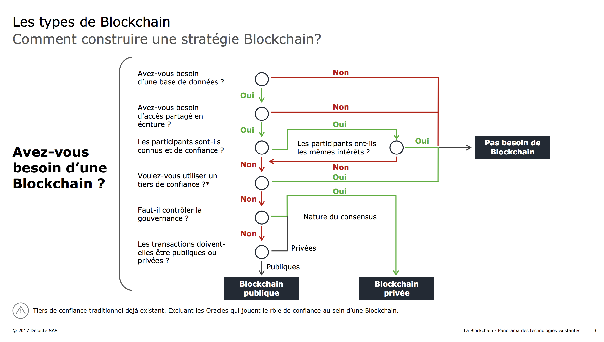

Blockchain limits
There are perilous passes in any technological revolution. Some in the blockchain industry have pointed out that the block chain has become oversized, when in reality, the technology has its limitations and is inappropriate for many digital interactions. But through research and development, successes and failures, trial and error, we know what the current problems and limitations of blockchains are.
Complexity
Blockchain technology involves an entirely new vocabulary. It has made cryptography more common, but highly specialized industry uses a specific vocabulary (some would say jargon). Fortunately, several efforts are being made to provide comprehensive and easy-to-understand glossaries and indexes.
Taille du réseau
Blocking chains (like all distributed systems) are not so much resistant to the wrong actors as they are "antifragile", i.e. they resist attacks and become stronger. However, this requires a large network of users. If a block chain is not a robust network with a grid of widely distributed nodes, it becomes more difficult to take full advantage of it. There is a discussion and debate on whether this is a fatal flaw for some projects in the chain of authorized blocks.
Transaction costs and network speed
Bitcoin currently has significant transaction costs after being presented as "almost free" in the early years of its existence. By the end of 2016, it can only process about seven transactions per second and each transaction costs about $0.20 and can only store 80 bytes of data. There is also the politically sensitive aspect of using the bitcoin block chain, not for transactions, but as a store of information. This is the issue of "swelling", often misunderstood because it forces minors to constantly reprocess and re-register information.
Human error
If a block string is used as a database, the information entered must be of high quality. The data stored on a block chain is not inherently reliable, so events must first be accurately recorded. The expression "garbage can at the entrance, garbage can at the exit" is true in a chain block recording system, just like in a centralized database.
An unavoidable safety defect
There is a significant security gap in bitcoin and other blocking chains: if more than half of the computers used as nodes to maintain the network lie, the lie will become the truth. This is called a "51% attack" and Satoshi Nakamoto pointed this out when he launched Bitcoin.
(Voir Quid de la sécurité de la blockchain)
For this reason, bitcoin mining deposits are closely monitored by the community, ensuring that no one unknowingly obtains such influence from the network.
Politics
Because the protocols of the block chain offer the possibility of digitizing governance models, and because miners are essentially another type of incentive governance model, there have been many opportunities for public disagreements between different community sectors. These disagreements are a notable feature of the block chain industry and are most clearly expressed around the issue or event of "forking" a block chain, a process that involves updating the block chain protocol when a majority of users of a block chain have accepted it. These debates can be very technical and sometimes exciting, but they are instructive for those interested in the mix of democracy, consensus and new opportunities for experimentation with governance that blocking chain technology opens up.
In which case should you equip yourself with a blockchain?
A flowchart to assist in the decision to set up a blockchain is proposed by Julien Maldonato et Rémi Foult in La Blockchain, panorama des technologies existantes.

Avez-vous besoin d’une blockchain ?
Julien Maldonato et Rémi Foult, La Blockchain, panorama des technologies existantes
Regarding the question of collective decision-making through voting, these limitations show that blockchain will not be the providential answer and invite to measure the opportunity comparatively of other proven methods.